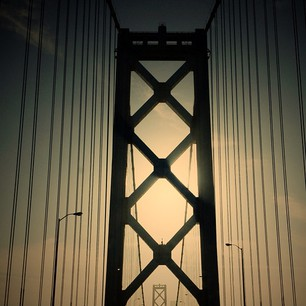

My Memory |
|||
| Home | My Memory | My Movies | My Restaurants |
|  | |||
|
One of my fondest memories was spending a summer in California taking classes at University of California, Berkeley. While I was only able to take two actual courses during that time, meeting a diverse group of students was awesome. The students there came from all around the world, so the International Business course I took was even more rewarding. However, exploring the city of San Francisco was the real highlight of the trip. Trying new foods and seeing new places are some of my fondest memories. I picked this memory since it was an awesome time in my life. This memory also has highly infuenced my carrer choices. I am looking to move out there soon aftter graduation. |
|||